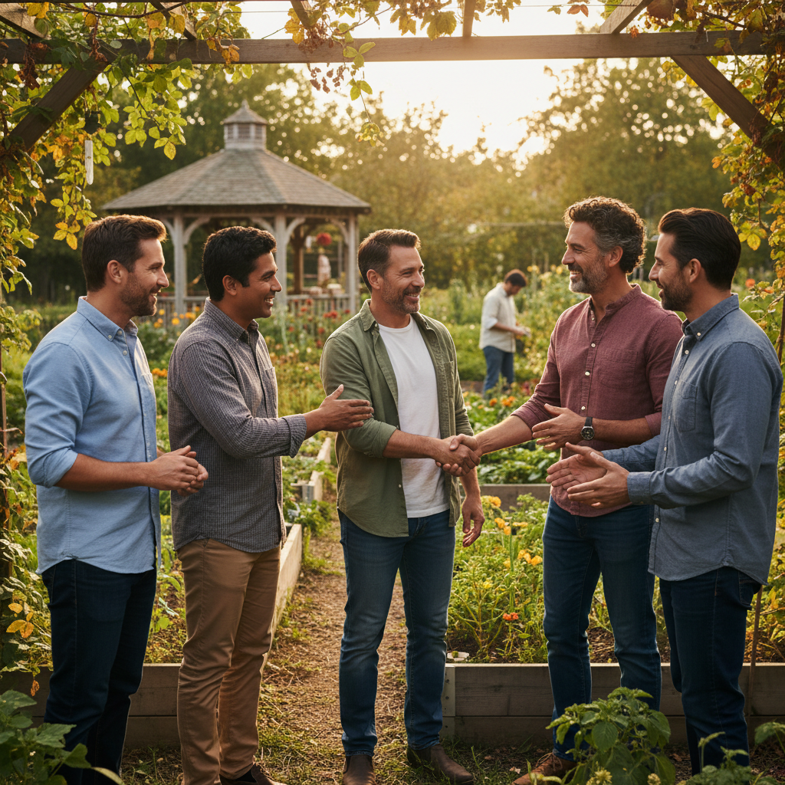

Hombres Íntegros, Llenos de Fe y Liderazgo
El Ministerio "Caballeros de Honor" de las Asambleas de Dios Central "El Puerto", está dedicado a formar y
fortalecer a los
hombres bajo los principios bíblicos. Nuestro objetivo es equipar a cada varón para que sea un líder íntegro
en su hogar, un esposo y padre ejemplar, un hijo de Dios comprometido, y un miembro activo y responsable en
su iglesia y comunidad. Creemos en el poder transformador de la Palabra para edificar hombres de carácter.

Nuestro Compromiso
Nos comprometemos a brindar un espacio de crecimiento y apoyo donde los hombres puedan:
- Profundizar su Relación con Dios: A través de estudios bíblicos, oración y tiempos de
reflexión enfocados en la masculinidad cristiana.
- Fortalecer su Familia: Recibir herramientas y enseñanzas para ser mejores esposos,
padres y proveedores bajo la guía de Dios.
- Desarrollar Liderazgo: Ser capacitados para ejercer influencia positiva en sus esferas
de vida, tanto en lo espiritual como en lo secular.
- Servir a la Comunidad: Participar en proyectos que demuestren el amor de Cristo a
través del servicio y la acción social.
Actividades para Hombres con Propósito
Organizamos diversas actividades que promueven el compañerismo y el crecimiento:
- Desayunos y cenas de hombres con oradores invitados.
- Retiros y campamentos anuales.
- Estudios bíblicos y grupos de discipulado para varones.
- Actividades deportivas y recreativas.
- Proyectos de servicio y evangelismo dirigidos por hombres.
Nuestro Liderazgo Caballeros
Conozca a nuestro equipo de liderazgo, dedicado a guiar a nuestro ministerio de caballeros con sabiduría,
visión y conforme a los principios bíblicos. Cada uno de ellos sirve con un corazón apasionado por Dios y
por el crecimiento de su pueblo.

Ana Sosa Martinez
Presidente
Cristian
Vice - Presidente
Raquel Abreu Guerrero
Secretario
Para más información sobre nuestra estructura de liderazgo y los pastores que nos sirven, por favor
contacte nuestra oficina central o revise nuestros estatutos disponibles en la sección de Recursos.
Galería de Fotos y Videos
Reviva los momentos más memorables de nuestros eventos, conferencias y actividades a través de nuestra
galería visual. Próximamente encontrará fotos y videos inspiradores que capturan la esencia de nuestro
ministerio de Caballeros.